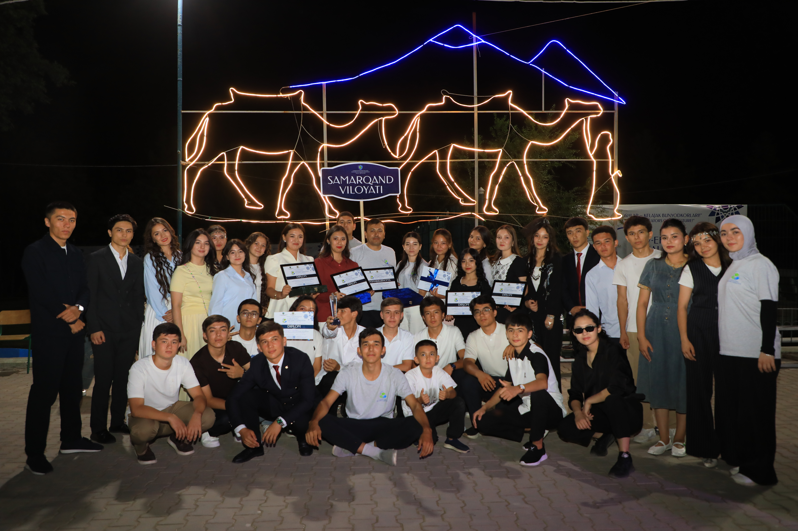

🌱 Chiqindidan san’atgacha
EcoFashionning eng qiziqarli jihatlaridan biri — oddiy va keraksiz buyumlarga yangi hayot berishdir. Eski kiyimlar, mato qoldiqlari, plastik materiallar, qog‘oz, karton, metall buyumlar va boshqa chiqindilar ijodkor qo‘lida noyob libos yoki aksessuarga aylanishi mumkin. Masalan, ilgari foydalanilgan jinsi shimlardan yangi ko‘ylak, sumka yoki kurtka yaratish mumkin. Eski futbolkalar yangi dizayndagi kiyimlarga aylantirilishi, mato qoldiqlaridan esa turli bezaklar tayyorlanishi mumkin. Hatto kundalik hayotda chiqindi deb qaraladigan ayrim materiallardan ham noodatiy va estetik liboslar yaratish mumkin. Bu jarayon upcycling, ya’ni mavjud materialning qiymatini oshirib, undan yangi mahsulot yaratish g‘oyasiga asoslanadi. Shunday qilib, EcoFashion bizga bir muhim haqiqatni ko‘rsatadi: chiqindi deb qaralayotgan narsalarning hammasi ham aslida chiqindi emas. Ba'zilariga shunchaki yangi g‘oya va yangi hayot kerak.
👗 Moda va ekologiya uyg‘unligi
Moda insonning tashqi ko‘rinishini ifodalash bilan birga, uning dunyoqarashini ham namoyon etadi. Kiyim orqali inson o‘zining didi, xarakteri va hatto qadriyatlarini ko‘rsatishi mumkin. EcoFashion esa kiyimga yana bir muhim ma'no qo‘shadi — ekologik mas'uliyat. Ekologik libos kiygan inson nafaqat chiroyli ko‘rinishga, balki atrof-muhitni asrash g‘oyasiga ham e'tibor qaratadi. Shuning uchun EcoFashionni “moda va tabiat o‘rtasidagi ko‘prik” deb atash mumkin. Bu yo‘nalishda dizaynerning vazifasi faqat chiroyli kiyim yaratish emas. U materialni tanlashdan boshlab, uni qayta ishlash, tikish, bezash va foydalanishgacha bo‘lgan jarayonning tabiatga ta'sirini hisobga oladi.
